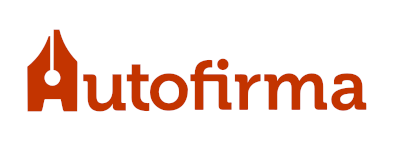

La aplicación "AutoFirma" permite realizar de forma sencilla firmas electrónicas avanzadas sobre ficheros locales.
Para simplificar al usuario el proceso, dispone de un mecanismo de selección automática de formato de firma en base al fichero a firmar (que, no obstante, puede cambiarse desde el menú de preferencias):
"AutoFirma" está diseñada para utilizar DNI electrónico (DNIe) como dispositivo
preferente para la creación de firmas en sistemas con lector de tarjetas inteligentes instalado, aunque puede hacer
uso de cualquier otro certificado instalado en el sistema operativo. Autofirma es compatible con DNIe 2.0 y DNIe 3.0,
a través de chip de contactos y NFC.
En caso de usar DNIe, se selecciona automáticamente el certificado de firma.
El uso de "AutoFirma" es muy sencillo, contando únicamente con tres pantallas en su interfaz de usuario:
Puede acceder en cualquier momento a esta ventana de ayuda pulsando la tecla F1 (⌘+? en Mac OS X).
"AutoFirma" está basado en el "Cliente @firma", y se distribuye para su uso con licencias GPLv2 y EUPL v1.1. Más información.